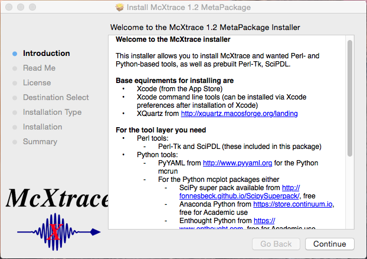
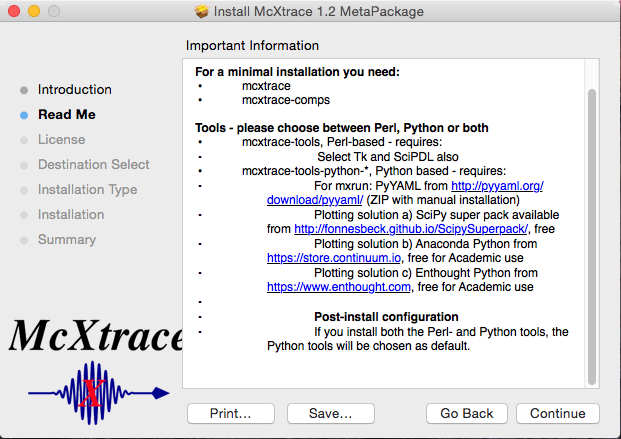
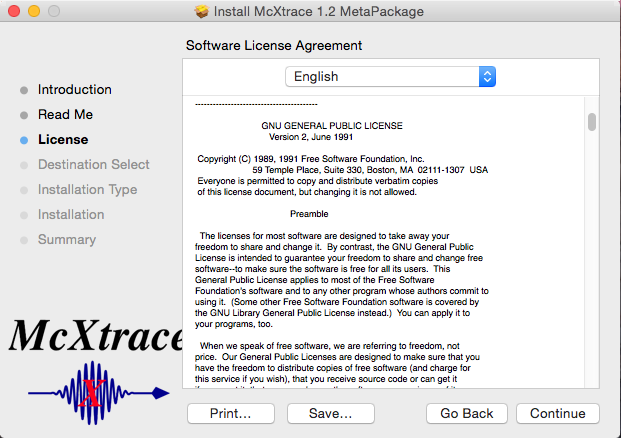
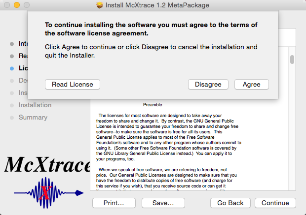
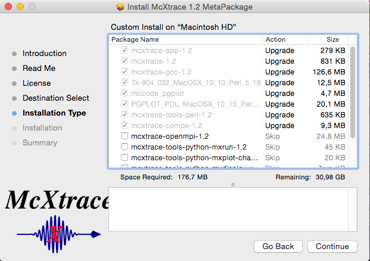
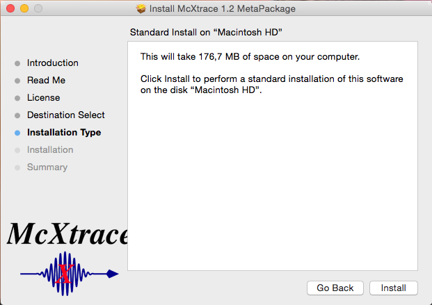
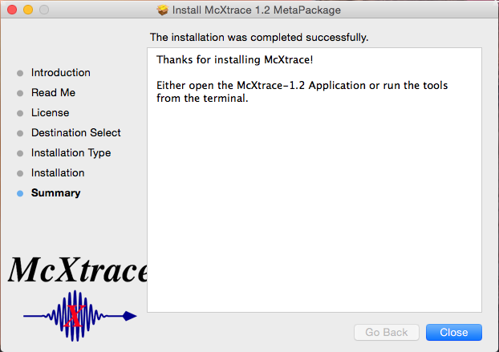

sudo xcode-select --installinside a terminal, to get only the Xcode command line tools.
You may furhter install either Intel C (commercial product) or the version of gcc available from http://hpc.sourceforge.net, as they both work much better than the Apple-provided llvm and llvm-gcc compilers. On MacOSX 10.8 and above (Mountain Lion, Mavericks), also install XQuartz (X11). If on Yosemite, there's an X.app in Applications->Utilities which will take you directly to the Xquartz-website
Afterwards, unzip your downloaded McXtrace bundle corresponding to your version of Mac OS X (we currently provide packages for 10.9 Maverics and 10.10 Yosemite) and run it. We can of course generate packages for older versions of Mac OSX if necessary. Please let us know and we'll try to support your platform as well.
Apart from the dependencies mentioned above, the defaults of the installation bundle includes everything you need for a base installation of McXtrace, namely
When the installation process is started you are greeted with this screen:
The next step mentions the dependencies of McXtrace.
Thirdly, you are asked to read and accept the Gnu public License under which McXtrace is distributed.
 Next, you are asked to choose which additional modules (if any) to install. A minimal McXtrace installation is already selected for you. Importantly - to enable running McXtrace in parallel using openmpi, check the box in front of the mcxtrace-openmpi-1.2 module.
Lastly - you are asked to confirm that you really do want to install McXtrace.
If all goes well you should now see this screen.
